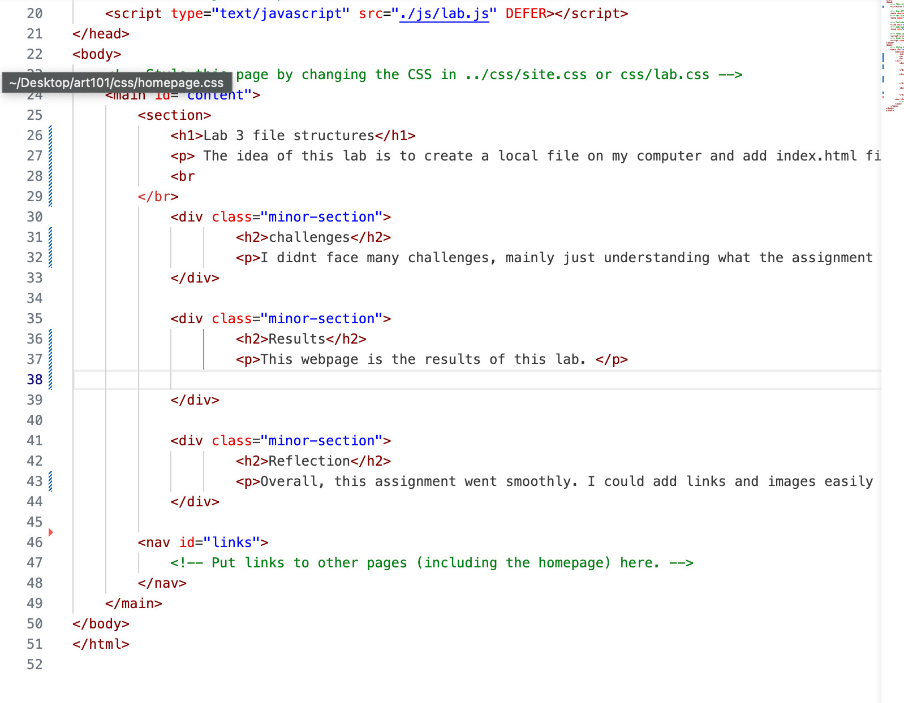

Lab 3 file structures
The idea of this lab is to create a local file on my computer and add index.html files
challenges
I didnt face many challenges, mainly just understanding what the assignment is asking for. I have gotten the hang of HTMLs
Results
This webpage is the results of this lab.
Reflection
Overall, this assignment went smoothly. I could add links and images easily and I think I am getting the hang of HTML